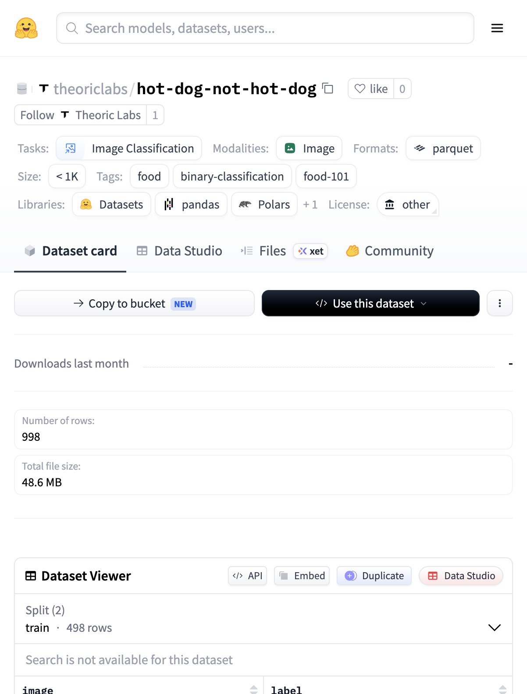

2026-08-31 · inaugural post
Let’s use compute!
Today we train Not Hotdog. A small model that says whether an image is a hot dog, or not.
It’s the gag from Silicon Valley — Jian-Yang’s SeeFood app. HBO’s clip:
You can train it on compute.cx in four steps:
- Setup compute
- Prepare the data
- Setup the model for training
- Train the model and validate
Setup compute
Create an account, install the CLI, add credits.
curl -fsSL https://compute.cx/install.sh | sh
compute setup
compute credits add 10One active run per account. New accounts have a first-day spend cap. Balance at or under $1 blocks new runs.
Prepare the data
We already prepared the data. Grab it from Hugging Face:
theoriclabs/hot-dog-not-hot-dog
It’s the Kaggle dansbecker/hot-dog-not-hot-dog cut — itself a binary slice of Food-101 (Bossard, Guillaumin, Van Gool, ECCV 2014, ETH Zurich). Cite the paper; don’t claim we made the photos.

In the training script, compute downloads the dataset on the machine during the run. You don’t upload images yourself.
Setup the model for training
Choosing a model architecture
Randomly initialized CNN. Three conv blocks, adaptive pool, linear head. About 180k parameters. No pretrained weights. Small on purpose.
Choosing a loss function
Cross-entropy. Two classes: hot_dog and not_hot_dog.
Train the model and validate
Clone the site repo, then work from this post’s folder. Or hand the skill file to your agent.
git clone https://github.com/theoriclabs/letsusecompute
cd letsusecompute/posts/not-hotdogNot-hotdog training files
Same repo as this site: posts/not-hotdog — train.py, SKILL.md, README.
Not-hotdog training prompt
Use SKILL.md in posts/not-hotdog to train the not-hotdog model on compute.cx.
Dataset: theoriclabs/hot-dog-not-hot-dog
Model: randomly initialized CNN, 3 conv blocks (~180k params), CrossEntropyLoss
Train for 50 epochs at 128x128.
First dry-run train.py::train with --gpu cheap --provider vastai.
Then run without --dry-run, show me the preflight GPU and dollar estimate, and ask before confirming spend.
After success, list and download artifacts.Dry-run first. It only prints the upload plan — no dollars yet.
compute run train.py::train --gpu cheap --provider vastai --dry-rundry-run (local AST; no upload, no quote)
entrypoint: train.py::train
files:
train.py
third-party: datasets, huggingface_hub, torch, torchvision
gpu: vastai/cheap
timeout: 1200s
image: cuda_pytorch
pip: torchvision, datasets, huggingface_hub, Pillow
secrets: (none)Then run for real. Prefer a cheap CUDA card. Default without --gpu is MI300X — too much machine for this toy.
compute run train.py::train --gpu vastai/RTX-3090 --timeout 1800 --waitYou’ll see a preflight quote before spend. Something like RTX-3090 at $0.15/hr, timeout budget of a few cents. Confirm if it looks right, or pass --yes.
Run preflight (billed by started minute):
provider: vastai
sku: RTX-3090
locked rate: $0.15/hr
timeout budget: 21 billed min → ≈ $0.05 total if the job runs to the timeout
balance: $9.16Validating the results
When the run succeeds, the machine is gone. Weights don’t live on the VM. The intended pull is artifacts:
compute artifacts list <run_id>
compute artifacts get <run_id> <artifact_id> <version> --out ./weightsTo keep a copy on Hugging Face, store a write token and run the secrets-backed entrypoint. Storing the secret is not enough — the function has to request it with Secret.from_name("hf"), or it never lands on the machine.
compute secrets set hf
compute run train.py::train_and_push --gpu cheap --provider vastai --timeout 1800 --waitThis guide’s checkpoint: theoriclabs/not-hotdog-cnn.
Want to train longer? Raise epochs and --timeout. You pay for billed minutes. Data stays on Hugging Face — compute doesn’t keep a volume for you. No wandb in this guide. No hosted inference API in this guide either; download the weights and run them locally.
Sample predictions from a 50-epoch train — three from each pile, test set, same checkpoint.

Next time we’ll train something else. Same shape: short guide, real GPU, weights you can keep.